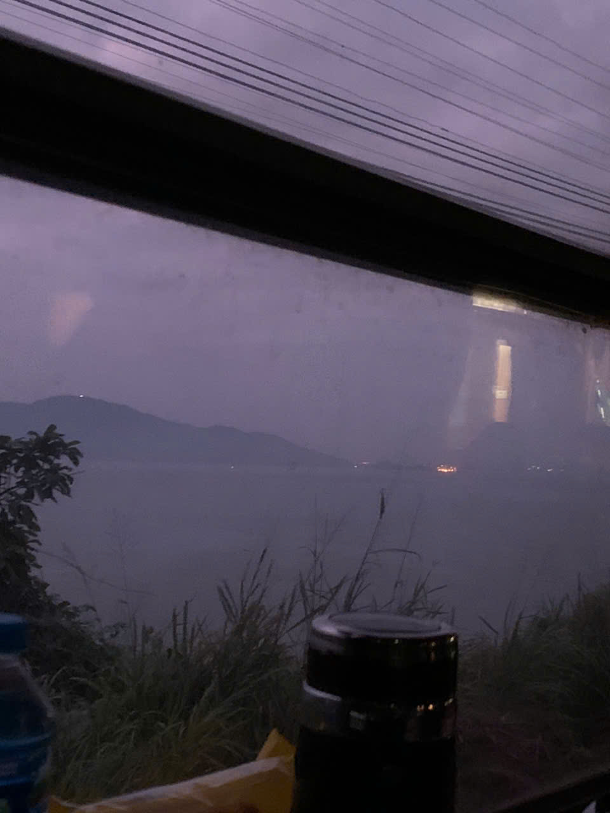

Hoàng Tấn Đạt — Daniel, to friends and teammates — is an Information Technology student at FPT University, Ho Chi Minh City (Oct 2023 — Feb 2027, expected), where he spends most of his time turning coffee and curiosity into working software. From July to October 2025 he worked as a Software Engineering Intern at FPT Software, contributing to enterprise projects in a professional team — agile ceremonies, code reviews, backend performance work, and the occasional humbling production bug.
He writes C/C++, JavaScript, TypeScript and Java, and builds with Node.js, React, Next.js, PostgreSQL and MongoDB. In 2025 he competed in the ICPC National Contest against top university teams from across the region.
Off the clock he is drawn to AI integration, high-performance systems, and hackathons — for the system-design puzzle, and for the particular joy of shipping an MVP before the deadline does.
Colophon
- languages
- C/C++ · JavaScript · TypeScript · Java
- tools
- Git · Docker · CI/CD · Node.js · React · Next.js · PostgreSQL · MongoDB
- interests
- software development · AI integration · high-performance systems · competitive programming
- this site
- hand-built html/css/js — no frameworks · set in EB Garamond & IBM Plex Mono